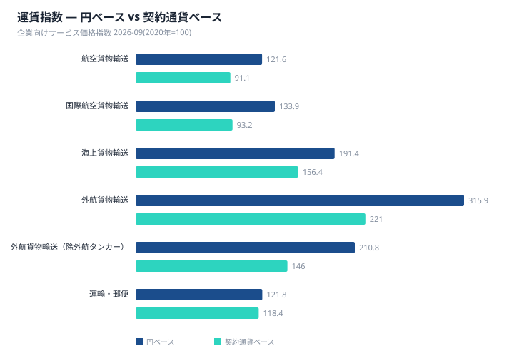
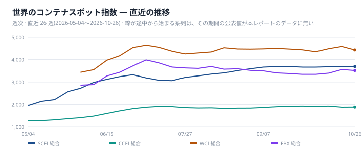
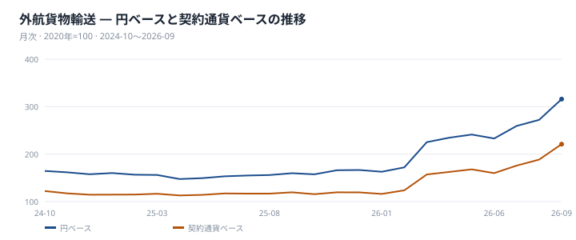
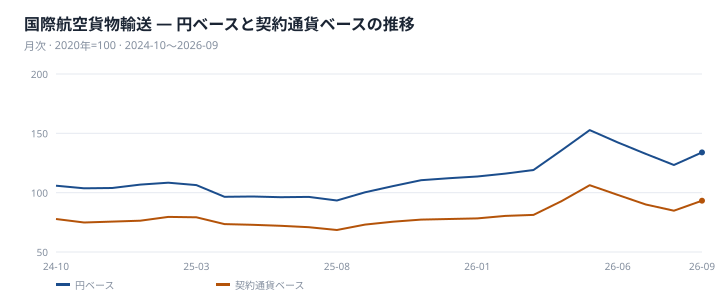
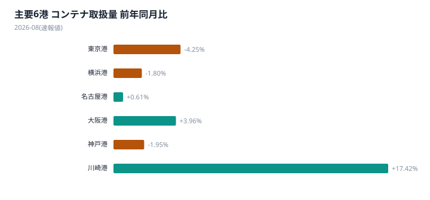
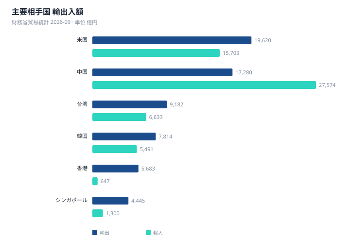

本号が扱う基準月は軸ごとに異なる。貿易統計と企業向けサービス価格指数(SPPI)は2026年9月分、港湾統計は2026年8月分の速報値であり、世界のコンテナスポット運賃は2026年10月26日時点、ユーラシア鉄道運賃指数(ERAI)は同年9月1日時点である。以下はこの時点差を踏まえて読む必要がある。
世界のスポット運賃は方向が割れている。コンテナ船ではSCFI総合3687.35(前週比+0.16%)とCCFI総合1881.82(同+0.3%)が上昇した一方、WCI総合4429(同▲3%)とFBX総合3513.25(同▲1.32%)は下落し、主要4系列は上昇2・下落2に二分した。中国・欧州間のユーラシア鉄道運賃指数(ERAI)も、総合3930(前月比+0.46%)に対し西航4084(同+0.05%)はほぼ横ばい、東航2601(同▲0.08%)はわずかに下げている。同じ指数の中で方向が分かれる点は、海運とユーラシア鉄道に共通して観測された。
日本側で際立つのは、外貨建て契約の系列と円建て契約の系列との伸びの差である。外航貨物輸送は円ベース315.9・契約通貨ベース221で、前年同月比は円ベース+97.7%・契約通貨ベース+84.8%とともに大きく伸びた。国際航空貨物輸送も円ベース133.9・契約通貨ベース93.2、前年同月比は円ベース+33.5%・契約通貨ベース+27.5%と同様の傾向を示す。両系列とも契約通貨ベースで前年を上回っており、運賃そのものの上昇に加え、円ベースには為替換算の影響も反映されていると読める。一方、円建て契約が中心の国内航空貨物輸送は円ベース84.5にとどまり、前年同月比は▲2.6%である。契約通貨ベースが公表されない国内の系列は、円安の影響をそのまま受ける構造にない。なお航空貨物輸送は契約通貨ベース91.1、国際航空貨物輸送は契約通貨ベース93.2といずれも基準年(2020年=100)を下回っており、円ベースの伸びほど運賃そのものの水準は高くない。
実体面では、金額と数量で異なる動きが同時に観測された。貿易統計では2026年9月の輸出額が10兆9539億円(前年同月比+16.5%)、輸入額が11兆5103億円(同+18.9%)とともに前年を上回り、貿易収支は5565億円の赤字だった。一方、港湾統計(2026年8月分速報値)では主要6港の外国貿易コンテナ取扱量が合計113万6881TEU、前年同月比▲1.2%で、輸入58万7308TEUが輸出54万9573TEUを上回る構成だった。金額ベースの貿易額が伸びる一方、数量に近い港湾取扱量は前年同月を下回っており、両者は異なる方向を示している。
世界のスポット指数は週次で直近まで公表されるのに対し、日本の企業向けサービス価格指数は月次で、当月分の公表までに約2か月を要する。10月26日時点のSCFI・CCFIの上昇とWCI・FBXの下落は、まだ公表されていない日本の外航運賃指数がどちらの方向に動くかを考える材料になる。ただし転嫁の幅と時期は契約条件によって異なり、本レポートのデータからは特定できない。次号では2026年9月分の港湾統計と、世界のスポット運賃の動きが日本の外航運賃指数にどう表れるかを次回以降の公表で確認する。

2026年10月26日時点のコンテナスポット運賃は、SCFI総合3687.35(前週比+0.16%)とCCFI総合1881.82(同+0.3%)が上昇した一方、WCI総合4429(同▲3%)とFBX総合3513.25(同▲1.32%)は下落した。主要4系列は上昇2・下落2で方向が二分している。航路別では2026年10月19日時点でSCFI上海→欧州が2351、上海→米西岸が7521、上海→米東岸が10388となっており、米国向けの運賃水準が欧州向けを上回る構図が続く。
日本銀行の企業向けサービス価格指数(2026年9月分)によると、外航貨物輸送は円ベース315.9、契約通貨ベース221.0。前年同月比は円ベース+97.7%、契約通貨ベース+84.8%である。これとは別の指標として、為替換算による上乗せ率は+7.0%、基準年(2020年=100)からの指数の比で見ると円ベース指数は契約通貨ベース指数を42.9%上回っている。単純差と上乗せ率は求め方の異なる別の数値であり、一方から他方を導くものではない。
親系列である海上貨物輸送は円ベース191.4、契約通貨ベース156.4で、前年同月比は円ベース+46.2%、契約通貨ベース+34.7%にとどまる。外航タンカーを除いた外航貨物輸送は円ベース210.8、契約通貨ベース146.0、前年同月比は円ベース+30.6%、契約通貨ベース+23.5%で、為替換算による上乗せ率は+5.7%である。外航貨物輸送本体に比べ、タンカーを除いた系列は円ベース・契約通貨ベースともに伸びが小さい。
日本海事センターの航路別コンテナ荷動き(2026年9月、往航)によると、北米向けは18ヶ国・地域合計で205万3213TEU(前年同月比+13.2%)。日本発は5万5152TEU(+24.5%)で全体の2.7%を占め、単月では大きく伸びたが、累計(49万3275TEU)は前年同期比▲1.6%にとどまる。最大シェアの中国発は106万7336TEU(+22.4%、シェア52%)で累計832万3916TEU(▲0.2%)、韓国発は10万7013TEU(+15.7%)、台湾発は5万3125TEU(+8.9%、累計▲10%)、ベトナム発は32万1746TEU(+2.5%)で累計は277万725TEU(+7.2%)だった。
欧州向け(2026年8月、往航)はアジア合計181万7932TEU(▲1.7%)、累計1453万35TEU(+10.2%)。日本単独の数値は公表されておらず、日本を含む北東アジア計は13万2131TEU(▲9.2%)、シェア7.3%、累計113万4305TEU(▲4.1%)。東南アジア計25万1551TEU(+9.8%)、中華地域計143万4248TEU(▲2.8%)で、北東アジアはアジア全体の中で唯一のマイナス基調にある。
供給面では、Drewryが主要East-West航路(アジア〜欧州・太平洋・大西洋、日本発着に限定しない)を対象に集計した欠航便数は2026年10月16日時点で44便、計画713便に対し欠航率6.2%。公表された直近6回を見ると、9月11日時点79便(欠航率11%)、9月18日時点77便(同10.7%)から、10月9日時点34便(同5%)、10月16日時点44便(同6.2%)へと欠航率は低下している。同時期のコンテナスポット指数は上昇2系列・下落2系列で方向が割れており、欠航率の低下とスポット運賃の方向性との関係は、このデータのみでは特定できない。
このほか、内航貨物輸送は円ベース139.6(前年同月比+8.1%)で、外航貨物輸送の伸び(円ベース+97.7%)に比べると小幅にとどまる。バルク市況のBDIは2026年10月19日時点で2634、燃料油はVLSFOが1059、HSFOが953と、いずれも同日時点の値である。


国際航空貨物輸送は円ベース133.9、契約通貨ベース93.2。前年同月比は円ベースが+33.5%、契約通貨ベースが+27.5%で、ともに前年を上回る。ただし契約通貨ベースの93.2は基準年(2020年=100)を下回る水準にとどまっており、運賃そのものは基準年比でなお低いことになる。為替換算による上乗せ率は前年同月比ベースで+4.7%、指数の比(基準年からの累積)でみると+43.7%に達しており、円ベースの伸びの大きさには為替換算の影響が相応に反映されている。親系列にあたる航空貨物輸送は円ベース121.6、契約通貨ベース91.1で、こちらも契約通貨ベースは基準年を下回る。世界のコンテナスポット運賃は主要4系列が上昇2・下落2に分かれているのに対し、国際航空は円ベース・契約通貨ベースとも前年同月を上回っている。
国内航空貨物輸送は円ベース84.5、前年同月比▲2.6%で、国際線とは逆に前年を下回った。契約通貨ベースの系列は示されていない。国際線が為替換算の上乗せを伴いながら円ベース・契約通貨ベースとも前年を上回っているのに対し、国内線は円ベースの水準自体が84.5と低く、前年同月比もマイナスである点で方向が分かれている。親系列である航空貨物輸送(円ベース121.6、+25.4%)と比べても、国内線の伸び率は下回っている。

中国と欧州を結ぶユーラシア鉄道運賃指数(ERAI)は、2026年9月1日時点で総合3930、前月比+0.46%だった。方向別では西航(中国→欧州)が4084で前月比+0.05%とほぼ横ばい、東航(欧州→中国)は2601で前月比▲0.08%とわずかに下げており、同じ指数の中でも方向が分かれている。なお、この変化率は前年同月比ではなく前月比である点に注意が必要だ。
ERAIは日本発着の航路ではなく、アジアと欧州を結ぶ代替ルートとして参照する位置づけの指標である。あわせて公表される平均輸送日数は2026年10月1日時点で7日となっており、運賃指数とは別の指標として示されている。輸送日数そのものの前月比は示されていない。
日本銀行の企業向けサービス価格指数(SPPI、2026年9月分)によると、陸上貨物輸送は円ベース113.2、前年同月比+4.6%だった。内訳となる道路貨物輸送は113.3(前年同月比+4.6%)で陸上貨物輸送とほぼ同水準にあり、鉄道貨物輸送は108.1(前年同月比+2.2%)と、三系列の中では最も低い水準にとどまっている。
陸上貨物輸送・道路貨物輸送・鉄道貨物輸送のいずれも前年同月を上回っており、陸上輸送全体として前年を上回る水準にある。ただし伸び幅には差があり、道路貨物輸送の+4.6%に対し鉄道貨物輸送は+2.2%と、両者の伸び率には開きが見られる。
| 港湾 | 合計 (TEU) | 輸出 | 輸入 | 前年同月比 |
|---|---|---|---|---|
| 主要6港 合計 | 1,136,881 | 549,573 | 587,308 | ▲1.2% |
| 東京港 | 342,747 | 156,937 | 185,810 | ▲4.3% |
| 横浜港 | 230,269 | 116,563 | 113,706 | ▲1.8% |
| 名古屋港 | 221,493 | 110,468 | 111,025 | +0.6% |
| 大阪港 | 169,456 | 77,018 | 92,438 | +4.0% |
| 神戸港 | 164,336 | 84,696 | 79,640 | ▲1.9% |
| 川崎港 | 8,580 | 3,891 | 4,689 | +17.4% |
※ 2026-08 分(速報値 — 確報とは確定度が異なる)。外国貿易コンテナ。合計は主要6港の合計であり全国計ではない。出典: 国土交通省 港湾統計。
国土交通省港湾統計による主要6港の外国貿易コンテナ取扱量は、2026年8月分の速報値で合計113万6881TEU、前年同月比▲1.2%だった。輸出が54万9573TEU、輸入が58万7308TEUで、輸入が輸出を上回る構成となっている。なお、この合計は主要6港の合計であり、全国計ではない。企業向けサービス価格指数と貿易統計は2026年9月分だが、港湾統計は2026年8月分の速報値であり、対象月が一致していない。
6港の内訳を見ると、増加と減少がちょうど3港ずつに分かれた。増加したのは川崎港の8580TEU(+17.4%)、大阪港の16万9456TEU(+4.0%)、名古屋港の22万1493TEU(+0.6%)である。一方、減少したのは東京港の34万2747TEU(▲4.3%)、神戸港の16万4336TEU(▲1.9%)、横浜港の23万269TEU(▲1.8%)だった。取扱量そのものが最大の東京港が前年同月比で最も大きく落ち込んでおり、規模上位と伸び率上位の顔ぶれは一致していない。
日本銀行の企業向けサービス価格指数(2026年9月分、2020年=100)では、港湾運送が105.1(前年同月比+0.8%)、倉庫が105.6(同+2.1%)だった。両系列はいずれも運輸・郵便の内訳にあたり、水準・伸び率ともに倉庫が港湾運送を上回っている。両指数とも円ベースの数値のみが示されており、契約通貨ベースとの差は確認できない。2026年8月分の港湾統計が示す取扱量の前年割れと、2026年9月分の価格指数の緩やかな上昇は、物量と価格という別の指標であり、一方から他方の動きを説明するものではない。

| 相手国 | 輸出 (億円) | 前年同月比 | 輸入 (億円) | 前年同月比 | 収支 (億円) |
|---|---|---|---|---|---|
| 総額 | 109,539 | +16.5% | 115,103 | +18.9% | ▲5,565 |
| 米国 | 19,620 | +22.9% | 15,703 | +44.8% | 3,917 |
| 中国 | 17,280 | +8.5% | 27,574 | +16.4% | ▲10,294 |
| 台湾 | 9,182 | +37.7% | 6,633 | +54.9% | 2,548 |
| 韓国 | 7,814 | +35.5% | 5,491 | +40.9% | 2,323 |
| 香港 | 5,683 | ▲8.1% | 647 | +18.8% | 5,036 |
| シンガポール | 4,445 | +53.2% | 1,300 | +21.6% | 3,145 |
| タイ | 4,210 | +22.5% | 3,944 | +18.1% | 265 |
| ベトナム | 2,744 | +10.4% | 4,642 | +22.6% | ▲1,898 |
| オーストラリア | 2,609 | +37.0% | 6,820 | +31.2% | ▲4,211 |
| インド | 2,559 | +5.5% | 1,190 | +66.3% | 1,370 |
※ 2026-09 分。輸出上位10か国。地域集計は除く。出典: 財務省貿易統計。
| 輸出品目 | 金額 (億円) | 構成比 | 輸入品目 | 金額 (億円) | 構成比 |
|---|---|---|---|---|---|
| 機械類及び輸送用機器 | 63,759 | 58.2% | 機械類及び輸送用機器 | 38,125 | 33.1% |
| 特殊取扱品 | 12,727 | 11.6% | 鉱物性燃料 | 23,467 | 20.4% |
| 化学製品 | 11,089 | 10.1% | 雑製品 | 13,123 | 11.4% |
| 原料別製品 | 11,083 | 10.1% | 化学製品 | 11,486 | 10.0% |
| 雑製品 | 5,866 | 5.4% | 原料別製品 | 9,615 | 8.4% |
| 鉱物性燃料 | 1,931 | 1.8% | 食料品及び動物 | 7,671 | 6.7% |
| 原材料 | 1,812 | 1.7% | 原材料 | 6,877 | 6.0% |
| 食料品及び動物 | 1,028 | 0.9% | 特殊取扱品 | 3,047 | 2.6% |
| 飲料及びたばこ | 195 | 0.2% | 飲料及びたばこ | 1,387 | 1.2% |
| 動植物性油脂 | 49 | 0.0% | 動植物性油脂 | 307 | 0.3% |
※ 2026-09 分。概況品目の大分類10品目。出典: 財務省貿易統計 概況品別国別表。
2026年9月の貿易統計によると、輸出額は10兆9539億円(前年同月比+16.5%)、輸入額は11兆5103億円(同+18.9%)で、ともに前年を上回った。輸出入を差し引いた貿易収支は5565億円の赤字である。
国別に見ると、輸出額が最大なのは米国の1兆9620億円で、中国の1兆7280億円が続く。一方、輸出の伸び率で見るとファクトシートにある国のうちシンガポールが+53.2%と最も高く、台湾+37.7%、オーストラリア+37.0%が続く。香港は輸出額こそ5683億円を確保しているが、伸び率は▲8.1%と減少に転じている。規模の上位と伸び率の上位は一致しない。
輸入では、伸び率でインドが+66.3%、台湾が+54.9%とファクトシートにある国の中で際立って高い。一方、英国は輸入が▲10.5%と前年を下回った数少ない例である。貿易収支は中国との間で1兆0294億円の赤字が最も大きく、オーストラリアも4211億円の赤字となっている。対照的に、香港との収支は5036億円の黒字で、ファクトシートにある国の中で最大の黒字相手となっている。
輸出の品目別構成では、機械類及び輸送用機器が58.2%(6兆3759億円)を占め、他の品目を大きく引き離している。これに特殊取扱品11.6%(1兆2727億円)、化学製品10.1%(1兆1089億円)、原料別製品10.1%(1兆1083億円)が続く。輸出側では機械類及び輸送用機器が構成比・金額ともに突出した位置にある。
輸入の品目別構成も機械類及び輸送用機器が33.1%(3兆8125億円)で最大だが、輸出に比べると構成比は低い。次いで鉱物性燃料が20.4%(2兆3467億円)を占めており、輸出側の鉱物性燃料1.8%(1931億円)とは対照的な位置づけとなっている。雑製品は11.4%(1兆3123億円)、化学製品は10.0%(1兆1486億円)で、輸入は機械類と鉱物性燃料の二本柱という構成が輸出とは異なる特徴である。なお、構成比の大小は前年同月比の伸びとは別のデータであり、ここから品目ごとの伸びの寄与を語ることはできない。

来月に向けて注視すべきは、海運スポット指数の方向性と、日本の企業向けサービス価格指数への反映状況である。SCFI総合・CCFI総合は直近で上昇した一方、WCI総合・FBX総合は下落しており、4系列は上昇2・下落2で方向が割れたまま10月26日時点を迎えている。日本の外航運賃を含む企業向けサービス価格指数は2026年9月分までの公表であり、この週次の動きがどちらに傾いて反映されるかは、次回以降の公表で確認することになる。ただし転嫁の幅と時期は契約条件によって異なり、データからは特定できない。
港湾統計は2026年8月分の速報値が最新であり、主要6港の取扱量は9月以降の動きを示していない。次に出る港湾統計で速報値がどう更新されるか、またCCFI・SCFIの上昇基調が続くかが確認点となる。
自社の契約で試算する — 本レポートは市場全体の指数を扱う。自社の契約時点と現在を入れて、値上げのうち運賃要因と為替要因を分けて出す道具を 物流費ベンチマーク に用意している。